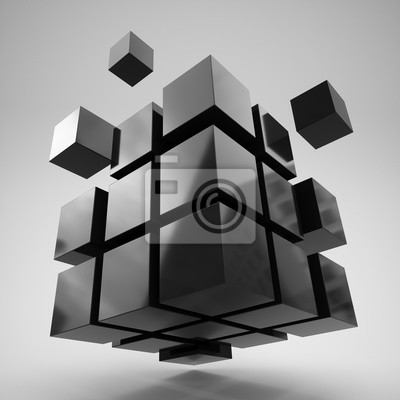
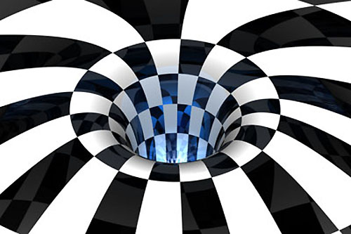
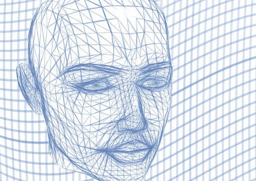
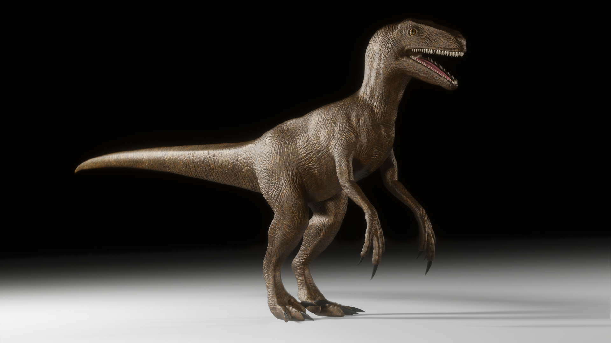
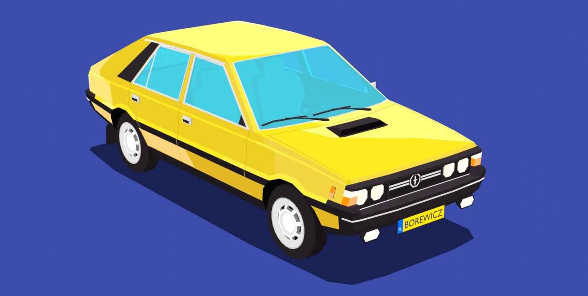
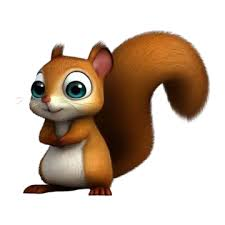

Grafika 3D to technika tworzenia obrazów i animacji w przestrzeni trójwymiarowej, gdzie obiekty mają długość, szerokość i głębokość. Grafika 3D jest używana w filmach, grach komputerowych, symulacjach, projektowaniu produktów czy architekturze.

🧩 Cechy grafiki 3D:
1. Możliwość animacji i symulacji fizyki. Obiekty mogą poruszać się, zginać, zderzać – jak w prawdziwym świecie.
2. Obsługa oświetlenia, materiałów i tekstur. Pozwala symulować różne powierzchnie (metal, szkło, drewno) oraz światła i cienie.

✅ Zalety grafiki 3D:
1. Realistyczne odwzorowanie przestrzeni. Możliwość tworzenia obiektów, które wyglądają bardzo naturalnie, z głębią, światłem i cieniem.
2. Możliwość animacji i interakcji. Obiekty 3D można animować, obracać, wchodzić z nimi w interakcje (gry, filmy, VR).

❌ Wady grafiki 3D:
1. Wysokie wymagania sprzętowe. Tworzenie i renderowanie grafiki 3D wymaga mocnych komputerów i kart graficznych.
2. Czasochłonność. Modelowanie, teksturowanie, oświetlenie i animacja mogą zająć dużo czasu.

🎨 Programy do grafiki 3D:
1. Blender - Darmowy, open-source, bardzo rozbudowany program do modelowania, animacji, renderowania.
2. SketchUp - Prostszym narzędzie do modelowania architektonicznego.

🎯 Zastosowania grafiki 3D:
1. Filmy i animacje. Tworzenie efektów specjalnych, postaci, scen w produkcjach filmowych.
2. Gry komputerowe. Modele postaci, środowiska, efekty – cała oprawa wizualna oparta na 3D.

🗂️ Rozszerzenia plików grafiki 3D:
1. Rozszerzenie: .OBJ, .BLEND, .STL
2. Opis: Uniwersalny format modelu 3D, często używany do eksportu między programami. Format natywny programu Blender. Powszechny w druku 3D.